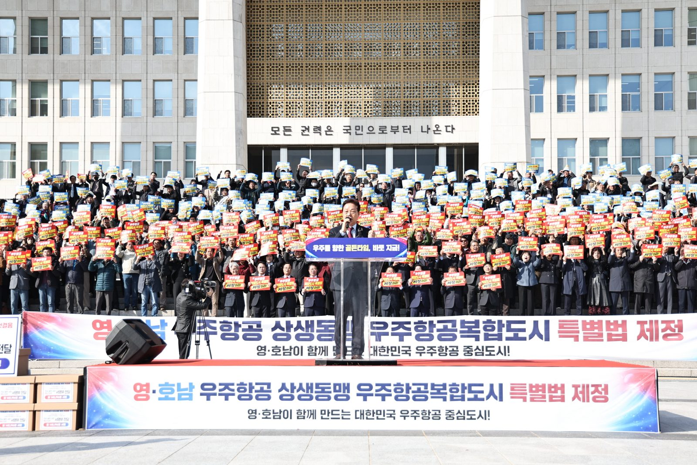
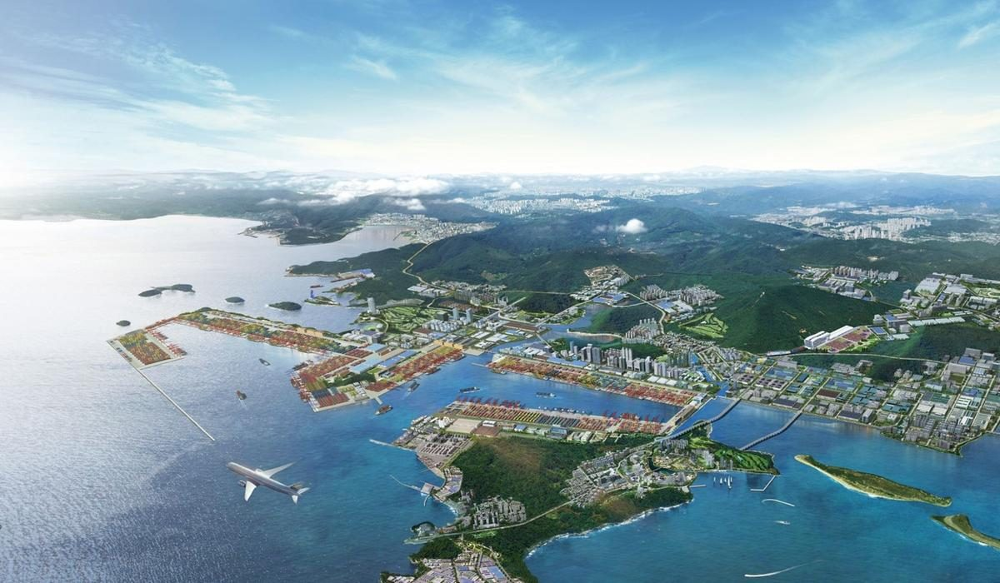

오늘 밤 비 그치고 내일부터 맑음…창원 아침 8도·5도로 쌀쌀
기상청 9일 오후 5시 단기예보에 따르면 9일 밤(18~24시)까지 경남권에 비가 내리겠다. 9일 경남의 예상 강수량은 5~10㎜다. 창원은 9일 밤 흐리고 비, 강수확률은 80%다.

박완수 지사와 영호남 시도민 500여 명이 9일 국회 앞에서 우주항공복합도시 특별법의 연내 제정을 촉구하고 14만여 명의 서명부를 여야 지도부에 전달했다. 같은 날 도는 국민의힘에 정책현안·국비사업 62건을, 국회 예결위원장에게 1,160억원 규모 사업 10건을 건의했다. 예결위 소위 심사는 다음 주부터다.
머리기사 읽기 →국내·환율: 11월 9일 정규장·서울 외환시장 주간 거래 마감 기준(비즈니스코리아·뉴스1 보도). 미국 주식·브렌트유: 현지 11월 6일(금) 마감으로, 7일 호와 같은 수치다. 9일(현지) 뉴욕장은 이 호의 기준 시각에 아직 열리지 않았다. 외국인 순매도는 코스피 시장 기준.
기상청 9일 오후 5시 단기예보에 따르면 9일 밤(18~24시)까지 경남권에 비가 내리겠다. 9일 경남의 예상 강수량은 5~10㎜다. 창원은 9일 밤 흐리고 비, 강수확률은 80%다.
8일 폐막한 제26회 마산가고파국화축제의 국화 전시가 15일까지 이어진다. 창원시는 날씨가 좋아 꽃 상태가 양호하다며 9일부터 15일까지 7일간 주 행사장인 3·15해양누…

창원 · 항만 / 9일창원시는 9일 진해신항을 북극항로 거점 항만으로 키우는 구상을 본격화한다고 밝혔다. 진해신항 물류에 창원국가산단의 기계·로봇·조선·방산 제조업과 지역 대학·연구기관을 묶어…
경남도는 10월 집중호우로 피해를 본 고성·남해 시금치가 농림축산식품부로부터 농업재해로 인정받았다고 9일 밝혔다. 도에 따르면 10월 경남 강우량은 190㎜로 평년(80.…
창원시는 전략조정실 주도로 '시민체감 불편해소 프로젝트'를 추진해 부서 협업으로 바로 할 수 있는 개선 과제를 찾고 있다고 9일 밝혔다.
박완수 경남지사는 9일 오후 국회 본관에서 열린 '국민의힘-경상남도 혁신성장 예산정책협의회'에서 정책현안 25건과 2027년도 국비사업 37건 등 62건을 건의했다. 협의회에는 장동혁 대표, 정점식 원내대표, 임이자 정책위의장, 박상웅 경남도당위원장과 지역구 의원 등…
9일 코스피는 전 거래일보다 40.84포인트(0.81%) 내린 5,018.85에 장을 마쳤다. 장중 5,172선까지 반등했으나 외국인 매도에 하락으로 돌아섰다. 코스닥은…
경남도는 경남투자청, KOTRA와 함께 10~12일 오스트리아에서 열리는 유럽 에너지 전시회 'Enlit Europe 2026'에 맞춰 투자유치 활동을 한다고 9일 밝혔다…
강기윤 창원시장은 9일 창원복지재단 신임 이사장에 정민화 씨를 임명했다. 정 이사장은 창원시 사회복지사협회 수석부회장, 경남도 사회복지사협회 부회장, 경남종합사회복지관 관장을 지냈다. 시는 장기간 이어진 기관장 공백을 해소하고 재단 조직을 안정시키는 것이 과제라고 밝혔다. 뉴스핌에 따르면 임기는 2028년 11월 8일까지 2년이다. 창원시 보도자료 · 11.9
제64주년 소방의 날인 9일 국립창원대학교 가온홀에서 기념식이 열렸다. 소방공무원과 지역 안전에 기여한 시민 등 95명이 표창을 받았다. 기념식 뒤 학교 운동장에서는 소방차·장비 전시와 심폐소생술 교육 등 시민 체험 행사가 이어졌다. LG헬로비전 · 11.9 13:48
경남도는 도내 C형간염 집단발생의 재발을 막기 위해 인공신장실을 운영하는 의료기관 93곳을 10월 28일부터 13일까지 전수 점검하고 있다고 9일 밝혔다. 9일에는 시군 보건소 담당자 25명의 협의체와, 보건소·인공신장실 종사자 약 160명이 참석한 감염관리 교육을 열었다. 도는 과거 집단발생이 일어난 기관과 감염자 수는 밝히지 않았다. 경남도 보도자료 · 11.9
창원시가 진해신항을 북극항로 거점 항만으로 키우겠다는 구상을 9일 내놓았다. 항만 물류에 창원국가산단의 제조업과 지역 대학·연구기관을 묶어, 배가 들르는 항구를 넘어 물건을 만들고 고치는 거점으로 삼겠다는 것이다. 창원이 가진 조선·기계·방산 기반을 항만과 연결하겠다는 방향은 옳다.
그러나 시가 내놓은 수치는 대부분 계획과 추정이다. 21선석, 배후단지 698만㎡는 계획이고, 생산유발 28조원과 취업유발 17만명은 분석 기관의 추정치다. 1단계 9개 선석 개장 목표는 2033년이다. 북극항로는 지난달 국내 컨테이너선이 처음 시범 왕복 운항을 마친 단계이고, 정부의 정기항로 목표는 2030년이다. 시도 운항 안전성과 경제성 검증이 남았다고 인정했다.
사설 전문 읽기 →국회 예산결산특별위원회 안에 꾸리는 소위원회로, 정부 예산안의 사업별 증액과 감액을 실제로 결정하는 단계다. 예결위는 종합정책질의와 부별 심사로 정부에 질의한 뒤, 소위에서 사업 하나하나의 금액을 조정한다. 지자체가 요청한 국비 사업이 정부안에 없거나 금액이 부족하면 대개 이 단계에서 증액을 노린다. 소위에서 합의가 안 되면 예결위원장과 여야 간사 협의로 넘어가기도 한다. 소위와 전체회의를 거친 수정안은 본회의 의결로 확정되며, 헌법상 처리시한은 회계연도 시작 30일 전인 12월 2일이다.
우주항공복합도시 특별법안에서 창원 기업이 받을 수 있는 지원 조항은 무엇인가. 경남도가 예결위원장에게 요청한 10건 가운데 공개하지 않은 6건, 약 1,050억원은 어떤 사업인가. 창원 방위·원자력 융합 국가산단은 지금 어느 행정 단계에 있는가. 진해신항 배후단지 698만㎡의 업종 배치와 입주 조건은 누가 언제 정하는가. 마산가고파국화축제 9일간 방문객 수는 언제 공개되는가. 이 질문들은 취재 제안이며, 확정된 취재 일정은 아니다.
이 호의 기사는 출처를 요약해 새로 작성했고, 해설과 사설은 편집 의견이다. 시황은 정보 제공용이며 투자 권유가 아니다. 날씨와 행사 일정은 바뀔 수 있으므로 기상청과 주최 측 안내를 확인하시기 바란다. 오류는 확인 즉시 정정한다.
발행인 cygang · 편집장 cygang · AI 기자 강가온(ChatGPT) · AI 기자 강윤슬(Claude)